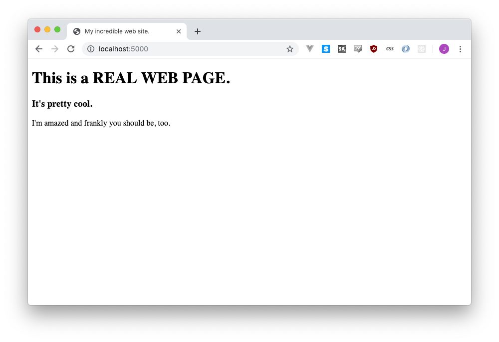

2 Getting started with Flask
We’re going to start by firing up a basic, no-frills web application using Flask. Flask is a web application framework, which means it does all the complicated parts of building a website and leaves you with the easy bits (relatively speaking). That definitely doesn’t make any sense right now, but that’s perfectly fine, because you’re about to see how it works!
2.1 Baby’s first web app
Make a new, empty folder. Add a new file in it called app.py that contains the following code:
# app.py
from flask import Flask
app = Flask(__name__)
@app.route("/")
def hello():
return "Hello World!"
if __name__ == '__main__':
app.run(debug=True)Welcome to your web app! Run it with python app.py. You might need to pip install flask before this bad boy will run.
Your terminal will do…. something? Nothing? In order to see the real magic, visit http://localhost:5000. Or http://127.0.0.1:5000!
Tada! it’s a web server, sending out a web site, just like Amazon or Geocities or whatever, except it’s running on your computer and only you can see it.
Both
localhostand127.0.0.1mean “your own computer,” and the5000is the port. If the IP address is the address of your computer in the world, the port is like a room number. If something is hanging out in room8888(Jupyter notebook!), no one else can stay in there.Flask uses
5000because it thinks hey, no reason not to. If something else was using5000Flask would panic and not work (there’s nowhere for it to stay, after all). You could change it by doingapp.run(debug=True, port=5001)or whatever else you wanted, but for now let’s be satisfied with the basics.
It’s pretty boring, though, and it only works for one URL. If you tried to go to http://localhost:5000/shoelaces, you’d get a Not Found error, just like if you tried to visit a web page on the Internet that doesn’t work.
2.1.1 Servers up servers down
If you were paying attention to your Terminal, you might have noticed that every time you refresh your page, it prints out a new line.
127.0.0.1 - - [13/Jun/2019 19:19:15] "GET / HTTP/1.1" 200
127.0.0.1 - - [13/Jun/2019 19:25:09] "GET /shoelaces HTTP/1.1" 404 That’s Flask spitting out debugging information, just in case there’s an error. The 200 means everything went okay, while 404 means that it couldn’t find that page.
Go ahead and try to type something in that window, like a nice ls or pwd…. it won’t work! That’s because Python/Flask is busy being in charge of that command line now, and the program won’t stop running until you hold down the control key and press C, aka Ctrl+C.
Go ahead and Ctrl+C your way out of the Python app.
You’re back at the command line now! If you try to refresh your web site at http://localhost:5000/, you’ll also see it’s totally broken and doesn’t work at all now. That’s because your server is down!
Before we turn it back on, let’s make a little adjustment to our app.py. Let’s help it support that /shoelaces URL we were talking about before:
# app.py
from flask import Flask
app = Flask(__name__)
@app.route("/")
def hello():
return "Hello World!"
@app.route("/shoelaces")
def shoelaces():
return "This works now!"
if __name__ == '__main__':
app.run(debug=True)Restart your server by running python app.py again, then visit http://localhost:5000/shoelaces again.
Hooray! Success!
2.1.2 Routing in Flask
The code we added looked like this:
@app.route("/shoelaces")
def shoelaces():
return "This works now!"This is called a route, it’s basically a URL where your web server has agreed to listen to. If you know about APIs, maybe you could call it an endpoint!
When someone visits /shoelaces, Flask runs the code underneath, and shows This works now! to whoever is on the page. If you’re confused by the @app or the def or any of that, don’t worry, it seriously doesn’t matter. There’s only one and a half rule:
When you add a new route, you add an app.route, but you also need to change the name of the def part.
When we added the /shoelaces route, we mostly re-used the code from above (the def and the return), but we renamed def hello to be def shoelaces. Let’s compare them:
@app.route("/")
def hello():
return "Hello world!"@app.route("/shoelaces")
def shoelaces():
return "This works now!"They both have different routes, and they both have different def names. Looks safe!
If you re-use one of those names, your app will break! So please try not to.
2.1.3 Here we go again
Try adding one more route, this one can be called /about. Mine is going to look like this:
@app.route("/about")
def about():
return "All about my website!"Visit http://localhost:5000/about, and voila! Perfect, simple, magic. You added a new route, you added a new page, you added a little bit of beauty to the internet.
Well, not the internet, actually! This web server only exists on your machine, and no one outside of your machine can access it. We’ll figure out how to put it online later, sorry if you were hyped to be the next MySpace.
2.2 Template time
I’m going to tell you a secret, if you promise to keep it to yourself: our web site sucks. Like, real bad. We’re barely going to break the top 100 in Alexa with this, so we’re going to have to do some bigtime fixing-up.
Right now our website can only say words. Let’s change our / route (our root) to say something else when you visit the page, someting that looks weird:
@app.route("/")
def hello():
return "<h1>Do you like big text?</h1><p>I'm ambivalent but accepting</p>"Visit http://localhost:5000/ again and be amazed.
Or not! If your web site stops working, don’t worry. Flask likes to quit runnning your server if you accidentally save Python code that has an error. Just check your command line, you probably just need to re-run
python app.py.
2.2.1 Bringing structure to this world
What we did was add HTML to our web page. HTML is the language that web pages are made out of!
If you love pedantry, we’re about to hit a great fact: HTML is a language computers use, but it isn’t a programming language!
HTML is a markup language - it’s right there in the name, HyperText Markup Language - and it’s used to describe what the different elements on a page are. <h1> means “real important header” and <h2> means “less important header” and <p> means “paragraph” and so on and so forth.
You can add other web-friendly languages to make your pages fancier - CSS to make them pretty and JavaScript to make them interactive - but for the next uh ten seconds or so we’ll ignore that they exist and love our ugly ugly page.
The biggest problem at the moment is that we probably want to write more than just those two lines on our page. Maybe we want like ten lines on our page, right? Sixty lines? And if we do, it’s going to be a royal pain to type all that out in one single Python string.
Is there a solution, hiding somewhere out in the world? Of course there is! We’re going to move them into a different file.
Creat a new folder call templates. And another one called static, while we’re at it!
Put a new empty file called index.html in your templates folder. It can live an alone, empty life for a second, I promise it’ll improve in a bit.
Your folder structure should look like this:
app.py
static/
templates/
index.html2.2.2 Template time
Now we’re going to set up our route to use that template. First step, import a little function that will allow us to talk to the template. Edit app.py to add a new import to the top of the file:
# app.py
from flask import Flask
from flask import render_templateAnd now let’s use it - we’ll edit our / route again, but this time we’re going to point it to that index.html file.
@app.route("/")
def hello():
return render_template("index.html")Refresh http://localhost:5000/ and see your grand, beautiful page: ….it’s empty!
You if you check the command line running Flask, you’ll see that it’s printed 200, which means everything worked. We forgot one thing, though: adding content into our template!
Edit index.html to look like this:
<!doctype html>
<html>
<head>
<title>My incredible web site.</title>
</head>
<body>
<h1>This is a REAL WEB PAGE.</h1>
<h3>It's pretty cool.</h2>
<p>I'm amazed and frankly you should be, too.</p>
</body>
</html>Refresh again!

Beautiful, beautiful, beautiful.
2.3 Adding CSS
It isn’t actually beautiful, but let’s not be too harsh on ourselves. We aren’t designers! We just have to take what the browser gives us and accept it as a cruel reality.
…or do we?
We aren’t designers, but luckily, other people are. And not only are the designers, but they’ve designed things and released them for us to use.
With one line of code we’re going to add their ways of styling a page to our amazing, beautiful website to make it even more amazing and beautiful.
2.3.1 Hello Bootstrap!
We’re going to be using Bootstrap, which is an incredibly popular and incredibly overwraught, heavyweight piece of overengineering. But like I said, it’s popular, so we don’t have any right to judge it (I guess?).
<!doctype html>
<html>
<head>
<title>My incredible web site.</title>
<link rel="stylesheet" href="https://stackpath.bootstrapcdn.com/bootstrap/4.3.1/css/bootstrap.min.css" crossorigin="anonymous">
</head>
<body>
<h1>This is a REAL WEB PAGE.</h1>
<h3>It's pretty cool.</h3>
<p>I'm amazed and frankly you should be, too.</p>
</body>
</html>Okay, actually it isn’t that beautiful yet, our font just changed a bit. We need to give it a little nudge to beautify it…
<!doctype html>
<html>
<head>
<title>My incredible web site.</title>
<link rel="stylesheet" href="https://stackpath.bootstrapcdn.com/bootstrap/4.3.1/css/bootstrap.min.css" crossorigin="anonymous">
</head>
<body>
<nav class="navbar navbar-expand-lg navbar-dark bg-dark">
<a class="navbar-brand" href="#">An incredible site</a>
</nav>
<div class="jumbotron">
<div class="container">
<h1 class="display-4">This is a <strong>real web page</strong>.</h1>
<p class="lead">It's pretty cool.</p>
</div>
</div>
<div class="container">
<p>I'm amazed and frankly you should be, too.</p>
<p>Look at this stuff!!! Incredible.</p>
</div>
</div>
</body>
</html>Okay, maybe more than a nudge, but that’s just how Bootstrap works: mostly well, and painfully. But you’ll get mostly used to it, I promise (or you’ll go use something nice like bulma instead).
2.3.2 What now?
Now that we have a somewhat cool website, we need some content to put on that site. Yeah, we could set up templates for about and shoelaces or whatever, but that’s a waste of time at the moment. We need some stuff!
So let’s take a break from the web and dance on over to database land, where we’ll learn to put together the database that’s going to power our site.